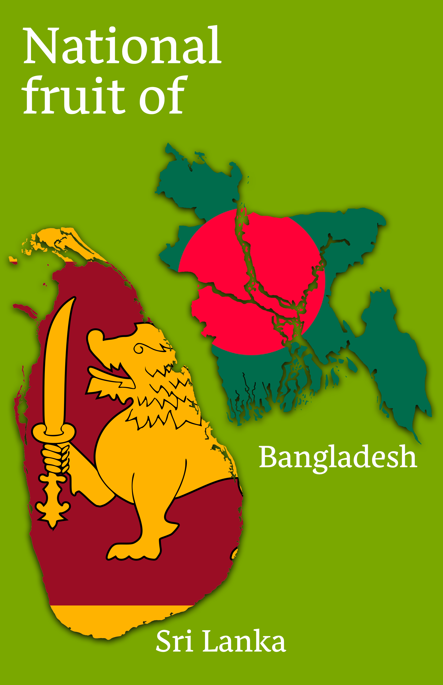
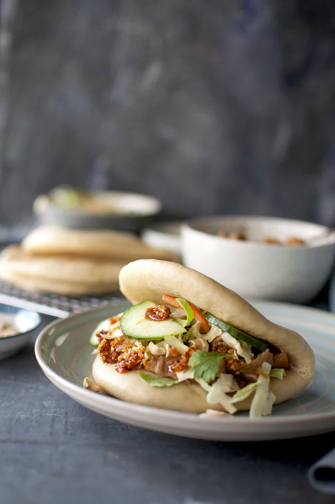
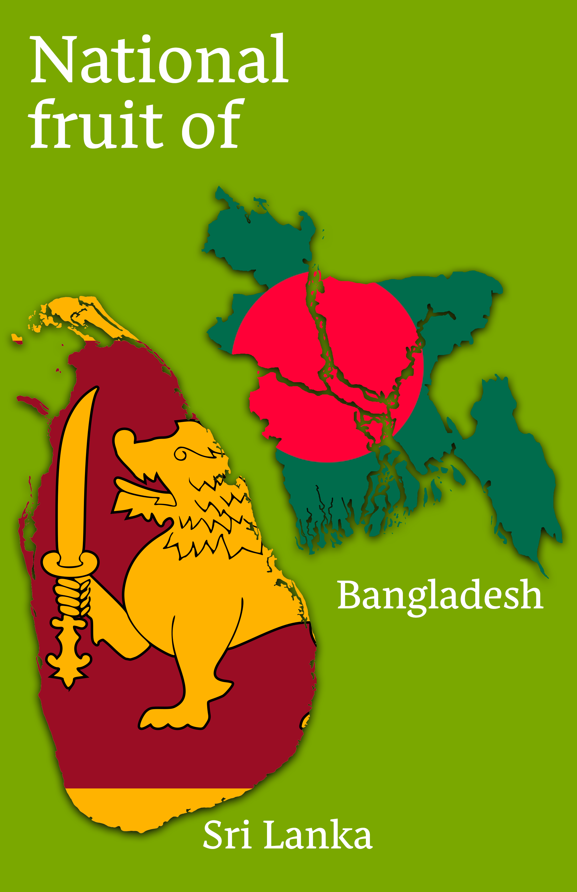
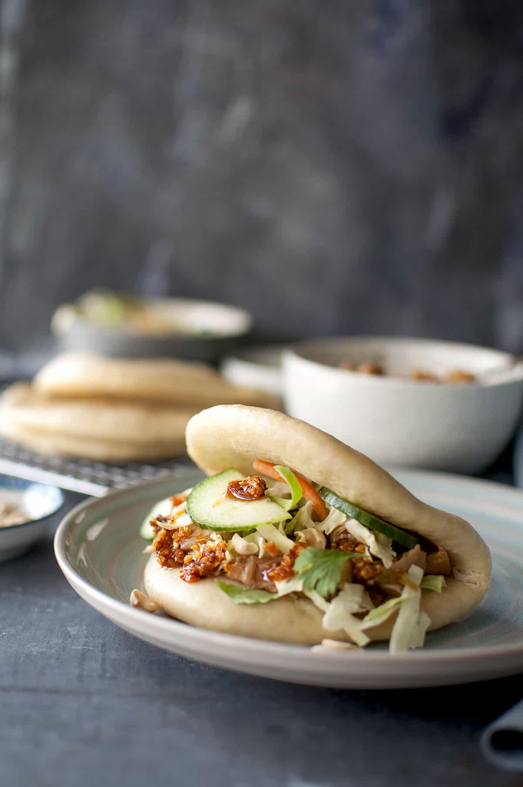

The
Jackfruit
Jackfruit is a tropical fruit that is native to Southeast Asia, but is
now cultivated
in many other regions around the world. It is the largest
tree-borne fruit in the
world and can weigh up to 80 pounds. Jackfruit
has a spiky, greenish-yellow
exterior and a creamy yellow flesh inside
that is divided into segments. It has
a sweet and fruity flavor and can
be eaten ripe or unripe. When unripe, jackfruit
has a meaty texture and
is often used as a vegetarian or vegan meat substitute.
When ripe,
jackfruit is juicy and has a flavor similar to a mix of pineapple and
mango.
Jackfruit is high in fiber, vitamin C, and other essential nutrients.
It is
also a good source of antioxidants and phytonutrients. Some popular
uses of
jackfruit include curries, stews, and tacos.
Jackfruit Bao Bun
Recipe
(click image)
 


